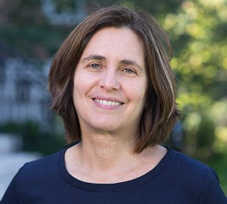

Het leven van Shafi Goldwasser

Het begin
Shafi Goldwasser is geboren in 1959 in New York City.
Haar ouders waren Israëlisch en dat maakt haar dus Israëlisch-Amerikaans.
Dit zou later veel invloed hebben op haar onderzoek.
Haar ouders gingen terug naar Israël waar Shafi naar de basisschool in Tel Aviv ging.
Toen ze op de middelbare school zat had ze veel interesse in natuurkunde, wiskunde en literatuur.
Haar studies
Nadat ze haar opleiding in Israël had afgemaakt, ging ze naar de Verenigde Staten om een bachelor te halen in wiskunde bij de Carnegie Mellon University.
Op de universiteit raakte ze snel geïntersseerd in programmeren en informatica hoewel ze dit nog nooit had gedaan.
Toen ze in 1979 haar bachelor voor wiskunde had gehaald, behaalde ze ook een Master of Science-graad in 1981.
Toen deed ze een informaticastudie aan de University of California, in Berkeley.
Dit deed ze onder toezicht van Manuel Blum en ze behaalde dit in 1984.
Een cursus informatica die ze zich vooral herinnert was gegeven door Jon Bentley.
Het was een cursus algoritmen en discrete wiskunde waar ze er erg veel van hield.
Haar werk
In 1983 ging ze aan het werk voor MIT waar ze nu hoogleraar is.
Ook is ze sinds 1993 nauw verbonden met het Weizmann Instituut der Wetenschappen in Israël.
Ze is lid van de theory of computation groep.
Ze is op 1 Januari 2018 directeur geworden van het Simons Institute for the Theory of Computing in de University of California.
Sahfi is getrouwd met Nir Shavit een informaticus aan de Universiteit in Tel Aviv en MIT.
Prijzen
In 1993 en 2001 heeft ze de Gödel Prize in theoretical computer science gewonnen.
Ook heeft ze een ACM Grace Murray Hopper Award in 1996, en in 1998 de RSA Award for Excellence in Mathematics.
Ook kreeg Shafi de Athena Lecturer Award of the Association for Computing Machinery's Committee on Women in Computing in 2008-2009, de Benjamin Franklin Medal in Computer and Cognitive Science in 2010.
En ze heeft de IEEE Emanuel R. Piore Award in 2011 ontvangen.
Daarnaast heeft ze in 2012 de Turing Award gewonnen samen met Silvio Micali vanwege haar werk met de complexiteitstheorie in cryptografie.
En ze won de Suffrage Science award in 2016. Samen met Micali, Rivest and Shamir heeft ze in 2018 de Frontier of Knowledge award gewonnen.
En op 26 juni 2019 heeft ze een honorary doctorate of science by the University van Oxford gekregen.